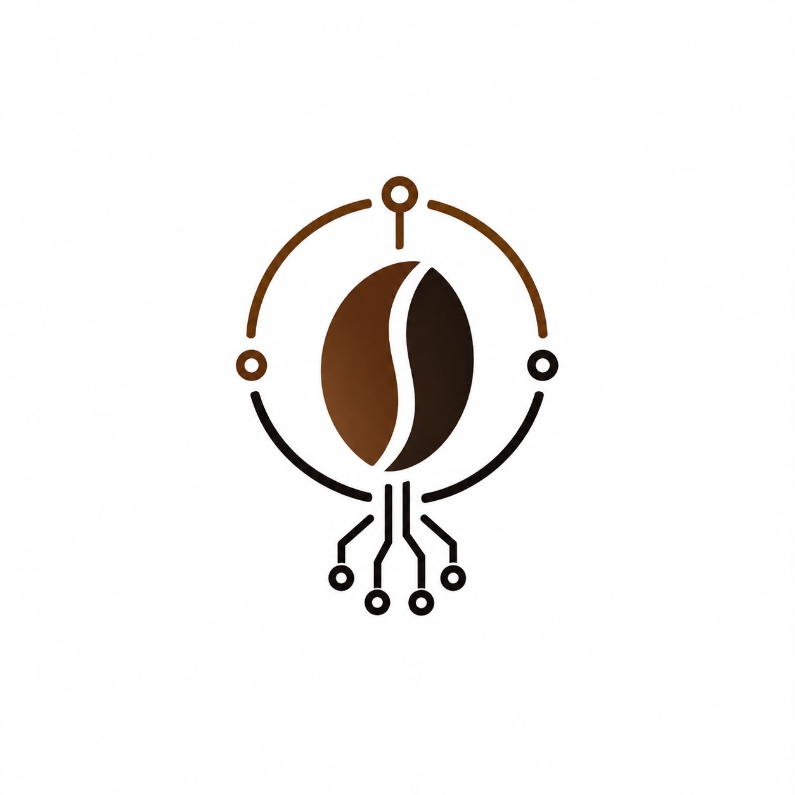

Isorropia Harvest
detector de café · YOLO11n propio
0
Rojo (cosechar)
0
Total
0
Seco
—
FPS
Granos detectados — posición (m) relativa a la cámara · dist = distancia directa
Sin detecciones todavía…
Iniciar cámara
📏 Calibrar 30 cm
Sesión de fotos — cada botón guarda el frame actual en su carpeta del servidor
rojos
verdes
rojo/verdes
naranjas
secos
Entrenamiento del modelo
—
🚀 Entrenar con las fotos nuevas
Cargando…